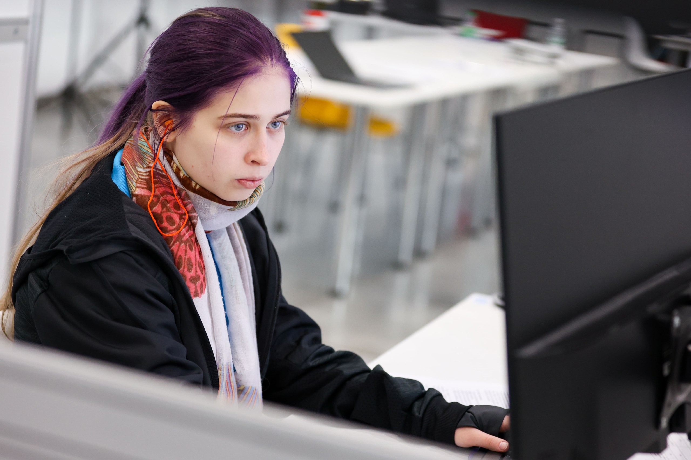
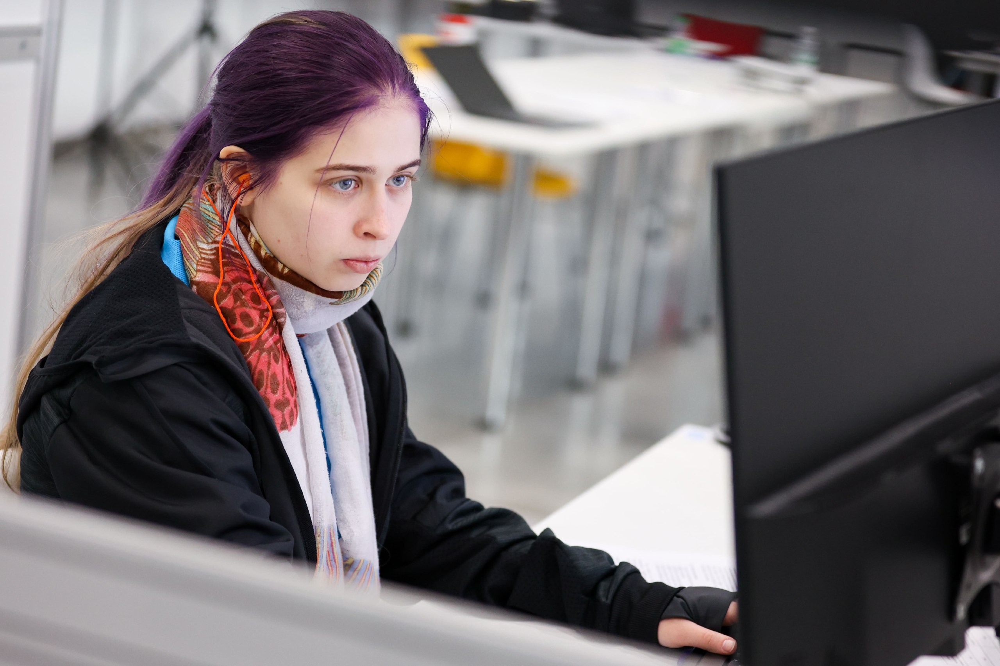

О чемпионате
Ежегодно в г. Казани, в Республике Татарстан проводится отраслевой чемпионат в сфере информационных технологий DigitalSkills. К участию приглашаются сотрудники предприятий малого, среднего и крупного бизнеса отрасли, студенты учреждений среднего и высшего образования.
DigitalSkills – это возможность совершенствовать навыки в среде профессионалов индустрии технологий, внести вклад в цифровизацию экономики страны, обмениваться опытом и получить оценку экспертного сообщества.
Чемпионат проходит более чем по 25 компетенциям в сфере информационных и цифровых технологий для конкурсантов в возрасте от 16 до 49 лет.
Профессиональное мастерство конкурсантов оценивает более 300 экспертов. Традиционно значительная часть соревнований представлена компетенциями FutureSkills. К ним относятся кросс-компетенции, которые возникают при трансформации традиционных отраслей под влиянием цифровых технологий.
Организаторы чемпионата – Министерство цифрового развития, связи и массовых коммуникаций Российской Федерации, Правительство Республики Татарстан и АНО «Агентство развития профессионального мастерства (Ворлдскиллс Россия)».
Команда РЭУ


 


Список компететенций
- Веб-технологии
- Графический дизайн
- Программные решения бизнеса
- Машинное обучение и большие данные
- Преподавание английского языка в дистанционном формате
- Разработка мобильных приложений
- Разработка решений с использованием Blockchain технологии
- Специалист по стрим-технологиям
- Цифровая трансформация
- 3D моделирование для компьютерных игря
Место проведения
Местом проведения отраслевого чемпионата в сфере информационных технологий DigitalSkills ежегодно являктся международный выставочный центр «Казань Экспо». «Казань Экспо» – один из крупнейших центров в России по величине выставочных площадей, построенный специально для проведения 45-го мирового чемпионата по профессиональному мастерству по стандартам WorldSkills в г.Казани в 2019 году. «Казань Экспо» – уникальный комплекс, позволяющий проводить крупнейшие мероприятия мирового масштаба. Выставочные павильоны оснащены всеми необходимыми коммуникациями для проведения высокотехнологичных мероприятий. центр может принять несколько десятков тысяч гостей.